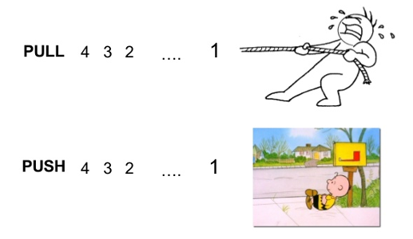
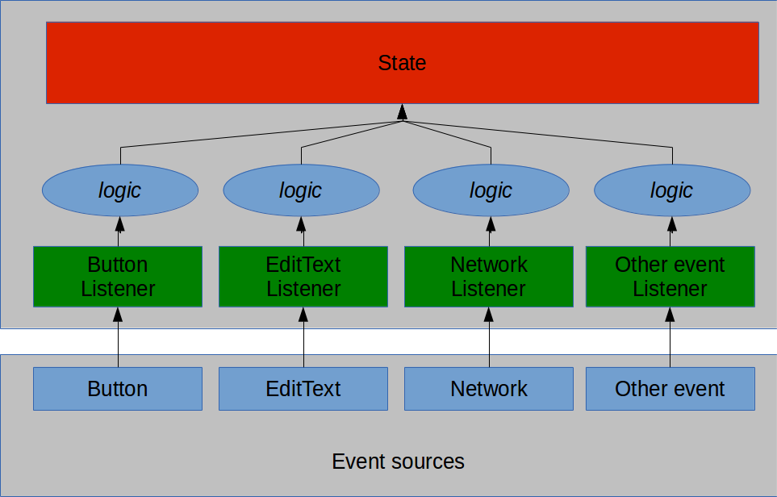
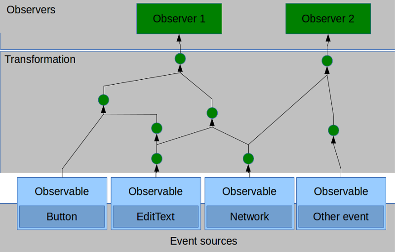
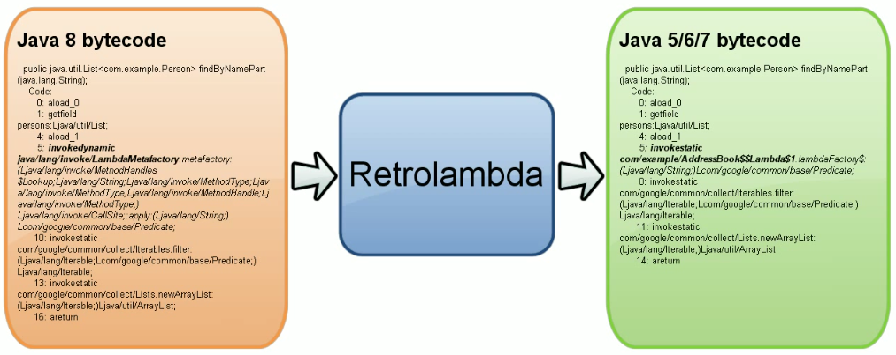
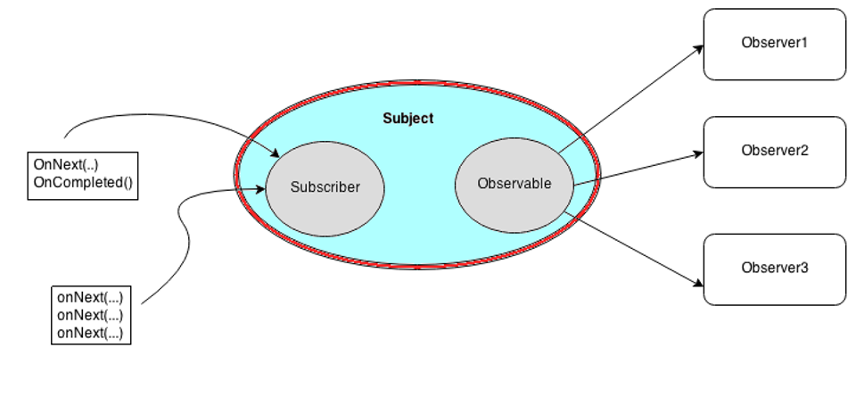
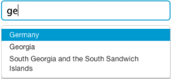

About Me
Sam Lee (misgod.tw@gmail.com)
A software engineer lives in Tainan
Work for htc
Most used Clojure, Scala and Java
Interested in Functional Programming
Interested in Machine Learning and Data Analyst
Sam Lee
2014/11/22 @Mosut x Taina.py x FP
Sam Lee (misgod.tw@gmail.com)
A software engineer lives in Tainan
Work for htc
Most used Clojure, Scala and Java
Interested in Functional Programming
Interested in Machine Learning and Data Analyst
A style of programming based on two key ideas: continuous time-varying behaviors, and event-based reactivity
aObservable.map(x -> x*x) //Square
.reduce((a, b) -> a+b) //Sum
.subscribe(x -> println(x)); //Show
You can transform & compose asynchronous operations.
High-level abstractions
Standard error handling
https://github.com/ReactiveX/RxJava
RxJava is a JVM implementation of Reactive Extensions
RxJava extends Observer pattern to support data/event and compose operators in abstract.
Built by Netflix
Support Java 6+ & Android 2.3+
Java 8 lambda support
| single items | multiple items | |
|---|---|---|
| synchronous | T getData() | Iterable<T> getData() |
| asynchronous | Future<T> getData() |
| event | Iterable (pull) | Observable (push) |
|---|---|---|
| retrieve data | T next() | onNext(T) |
| discover error | throws Exception | onError(Exception) |
| complete | !hasNext() | onCompleted() |

http://csl.stanford.edu/~christos/pldi2010.fit/meijer.duality.pdf

pushman.subscribe(new Action1<Integer>() {
@Override
public void call(Integer x) {
println("receive: " + x);
}
});

image from http://slides.com/yaroslavheriatovych/frponandroid

image from http://slides.com/yaroslavheriatovych/frponandroid
aObservable.filter(new Func1<Integer, Boolean>() {
public Boolean call(Integer n) {
return n % 2 == 0;
}
})
.map(new Func1<Integer, Integer>() {
public Integer call(Integer n) {
return n * n;
}
})
.subscribe(new Action1<Integer>() {
public void call(Integer n) {
System.out.println(n);
}
});
WTF...

aObservable.filter(n -> n % 2 == 0)
.map(n -> n * n)
.subscribe(System.out::println);
but ... no java8 on Davilk(Android)
Retrolambda
Gradle plugin


Observable<List<String>> ob = Observable.just(aList);
Observable<String> ob2 = Observable.just("Some String");

List<String> aList = ...;
Observable<String> ob = Observable.from(aList);

ob = Observable.create(subscriber -> {
try {
for (String s : aList) {
if (subscriber.isUnsubscribed())
return;
subscriber.onNext(s);
}
subscriber.onCompleted();
} catch (Exception e) {
subscriber.onError(e);
}
});
repeat( )
range( )
interval( )
timer( )
empty( )
error( )
https://github.com/ReactiveX/RxJava/wiki/Creating-Observables

Observable.range(0, 5)
.map(x -> toBinaryString(x*x))
.subscribe(s -> println(s),
err -> err.printStackTrace(),
() -> println("done"));
0
1
100
1001
10000
done

Observable.range(1, 3)
.flatMap(x -> Observable.just(x).repeat(x))
.subscribe(System.out::println);
1
2
2
3
3
3
Observable is a Monad
- unit (return) ==> just
- join (bind, >>=) ==> flatmap


Observable.range(0, 10)
.filter(x -> (x % 2) == 0)
.subscribe(System.out::println);
0
2
4
6
8
https://github.com/ReactiveX/RxJava/wiki/Filtering-Observables

Observable.range(1, 10)
.reduce((a, b) -> a*b)
.subscribe(System.out::println);
3628800


Observable<String> lower = Observable.from(new String[]{"a", "b", "c"});
Observable<String> upper = Observable.from(new String[]{"A", "B", "C"});
Observable.merge(lower,upper).subscribe(System.out::println);
/* Or */
lower.mergeWith(upper).subscribe(System.out::println);
a
b
A
c
B
C

Observable<String> lower = Observable.from(new String[]{"a", "b", "c"});
Observable<String> upper = Observable.from(new String[]{"A", "B", "C"});
lower.startWith(upper).subscribe(System.out::println);
A
B
C
a
b
c

Observable<String> lower = Observable.from(new String[]{"a", "b", "c"});
Observable<String> upper = Observable.from(new String[]{"A", "B", "C"});
Observable.zip(lower, upper, Pair::create)
.map(pair -> pair.first +"_" +pair.second)
.subscribe(System.out::println);
a_A
b_B
c_C
OnErrorResumeNext
OnErrorReturn
retry
https://github.com/ReactiveX/RxJava/wiki/Error-Handling-Operators
specify on which Scheduler a Subscriber should observe the Observable
specify which Scheduler an Observable should use when its subscription is invoked

PublishSubject
BehaviorSubject
AsyncSubject
ReplaySubject
Subscriber -----> Observable
PublishSubject<Integer> subject = PublishSubject.create();
//Observable
subject.map(x -> x*x)
.subscribe(o -> println(o));
subject.map(x -> x+1)
.subscribe(o -> println(o));
//Subscriber
subject.onNext(11);
subject.onNext(11);
subject.onCompleted();
Developing a robust app is painful
Developing a good UX app is painful
Thread, Executor, Handler, AsyncTask, Loader ...
RxJava can mitigate your pain
Retrofit supports methods with a return type of rx.Observable
@GET("/user/{id}/photo")
Observable<Photo> getUserPhoto(@Path("id") int id);
Android specific bindings for RxJava.
Scheduler on main UI thread or a given Android Handler thread.
Reactive components for common Android use cases and UI widgets
/* API */
void getFromServer(String key, Action1<String> callback);
void getFromDB(String key, Action1<String> callback);
/* Code */
btnClick.setOnClickListener(new View.OnClickListener() {
public void onClick(View view) {
getFromDB("myid", new Action1<String>() {
public void call(String s) {
getFromServer(s, new Action1<String>() {
public void call(final String s) {
runOnUiThread(new Runnable() {
public void run() {
Toast.makeText(context, s, LENGTH_LONG).show();
}
});
/* ... a lot of }) ... */
btnClick.setOnClickListener(view ->
getFromDB("myid",
s -> getFromServer(s,
x -> runOnUiThread(
() -> Toast.makeText(context, x, LENGTH_LONG).show()))));
Shorter but not easy to read
/* API */
Observable<String> getFromServer(String key);
Observable<String> getFromDB(String key);
/* Code */
ViewObservable.clicks(btnClick)
.map(x -> "myid")
.observeOn(Schedulers.io())
.flatMap(this::getFromDB)
.flatMap(this::getFromServer)
.observeOn(AndroidSchedulers.mainThread())
.subscribe(x -> Toast.makeText(context, x, LENGTH_LONG).show());
Observable<SearchResult> g = googleSearch.search(keyword).retry(3);
Observable<SearchResult> b = bingSearch.search(keyword).retry(3);
Observable<SearchResult> y = yahooSearch.search(keyword).retry(3);
Observable.merge(g, b, y)
.distinct(site -> site.url)
.observeOn(AndroidSchedulers.mainThread())
.subscribe(site -> appendDataForUI() ,
err -> errorhandle(err));
PublishSubject<Object> subject = PublishSubject.create(); //Global Singleton
//...In Class A...
subject.filter(x -> x instanceof DataUpdateAction)
.subscribe( x -> ... doSomething ...);
//...In Class B...
subject.filter(x -> x instanceof DeleteAction)
.subscribe( x -> ... doSomething ...);
//...In Class C...
subject.filter(x -> x instanceof RefreshAction)
.subscribe( x -> ... doSomething ...);
subject.onNext(aDataUpdateAction);
subject.onNext(aDataUpdateAction;
subject.onNext(aRefreshAction);

private Observable<String> getSuggestion(String prefix) { ... }
Observable<Observable<List<String>>> o =
ViewObservable.text(aEditText)
.map(event -> event.text.toString())
.filter(x -> x.length() > 1)
.observeOn(Schedulers.io())
.map(x -> getSuggestion(x).toList());
Observable.switchOnNext(o)
.observeOn(AndroidSchedulers.mainThread())
.subscribe(lst -> showSuggestion(lst));